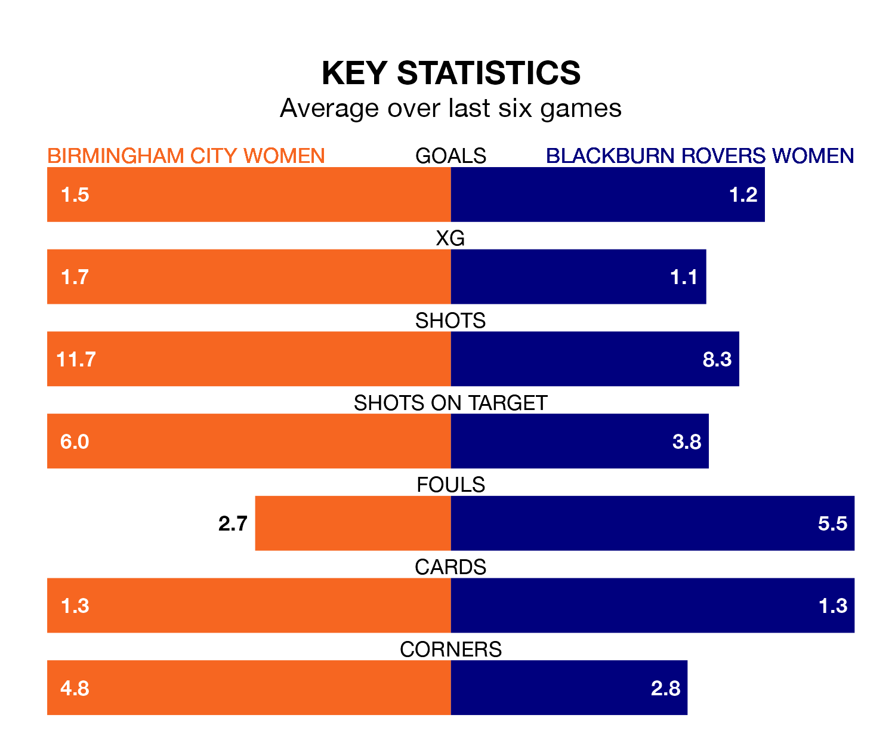

Birmingham City Women host Blackburn Rovers Women on Sunday at St Andrew's in the FA Women's Championship.
In their last league match, on February 18, Birmingham City lost to Southampton Women 2-1 at home, with their goal scored by Ivana Fuso.
Blackburn Rovers won, 2-1 at home against Lewes Women on Monday, with Hannah Coan and Lucy Shepherd on the scoresheet.
With 15 goals in 16 games so far this season, Blackburn Rovers are the league's joint-second-lowest scorers with 0.9 goals per game. And they are conceding more than average, letting in 25 goals at a rate of 1.6 per game.
Birmingham City, meanwhile, are above average scorers, with 1.7 goals per game, compared to a league average of 1.4. They have conceded 0.9 goals per game.
With Lucy Thomas between the sticks, the Blues can rely on one of the league's safest pair of hands. She has kept five clean sheets in her 15 appearances this season, and only two other 'keepers – Sunderland Women's Claudia Moan and Reading Women's Emily Orman – have been able to prevent the opposition scoring on more occasions in the FA Women's Championship.
In the away team's net, Alexandra Brooks also has five clean sheets in 16 games. She has conceded a goal every 63 minutes, 80% more often than the 113 minutes between goals for Lucy Thomas.
In the last five years, Birmingham City and Blackburn Rovers have played each other on four occasions. Birmingham City won three of them and Blackburn Rovers one.
On average, the Blues scored 1.2 goals and Blackburn Rovers 0.5 in those matches.
Their last meeting was on August 26, when Blackburn Rovers won 1-0 at home.
The hosts are in reasonable form in the FA Women's Championship, with four wins and two losses from their last six games.
With two wins and a draw over that period, Blackburn Rovers' form is worse – they have taken seven points from 18, compared to Birmingham City's 12.
Birmingham City are fifth in the table after 15 games, of which they have won eight and drawn two, earning 26 points.
Blackburn Rovers are one place behind the Blues in sixth, with seven wins and one draw putting them on 22 points.
Updated: 15:10 (UTC), 15/03/24